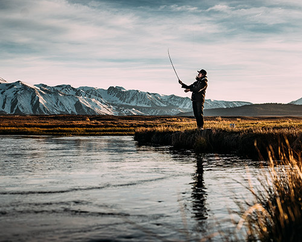

The Fishing Crowds are Coming
By Sara Moss
As the weather turns warmer Fish Haven is starting to get a more regular stream of fishers. The yearly fishing season in town is what keeps the town shops alive. Gene Fox has owned the local bait and tackle shop, Jo's Worms, for the past six years, and before that, Gene's uncle, Jo himself owned it.
Gene says "We love when fishing season starts. Not only because buisness increases, but because we get to meet people from all over the United States." With Fish Haven having such a small population, most people who come to the town to fish are not locals. For people like Gene, this is great!
However, local authorities say that there are some downsides that come with this increase of outsides. Jim Stevens, of the FHPD says that with the increase of people in town, comes an increase of speeding. "We are always going to make sure that the town is safe."
As the weather turns warmer Fish Haven is starting to get a more regular stream of fishers. The yearly fishing season in town is what keeps the town shops alive. Gene Fox has owned the local bait and tackle shop, Jo's Worms, for the past six years, and before that, Gene's uncle, Jo himself owned it. Gene says "We love when fishing season starts. Not only because buisness increases, but because we get to meet people from all over the United States."...
continue to full article